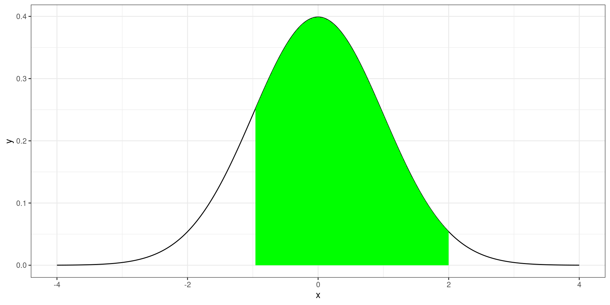
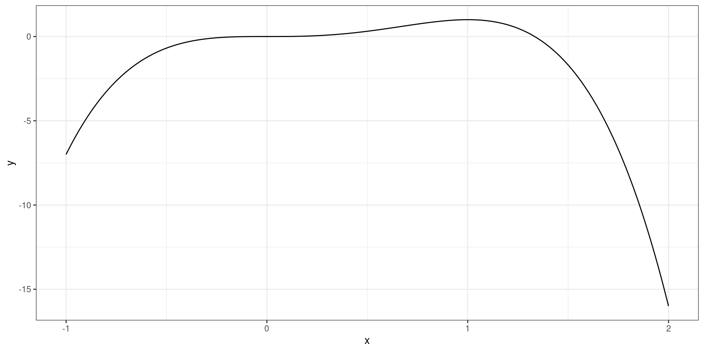

Monte Carlo Methods
Integration and Optimization
R Packages
Monte Carlo Integration
Monte Carlo Integration
Importance Sampling
Monte Carlo Optimization
Toy Collector’s Problem
Monte Carlo Integration
Monte Carlo Integration is a numerical technique to compute a numerical of an integral.
It relies on simulating from a know distribution to obtain the expected value of a desired function.
Integration
Integration is commonly used to find the area under a curve.
Expectation
Let \(X\) be a continuous random variable:
\[ E(X) = \int_{X}xf(x)dx \]
\[ E\{g(X)\} = \int_Xg(x)f(x)dx \]
Strong Law of Large Numbers
As \(n\rightarrow \infty\) (ie simulate a large number of random variables):
\[ \bar X_n \rightarrow E_f(X) \]
where
\[ \bar X_n \rightarrow = \frac{1}{n}\sum^n_{i=1}X_i \]
Strong Law of Large Numbers
\[ \bar X_n^{(g)} \rightarrow E_f\{g(X)\} \]
where
\[ \bar X_n^{(g)} \rightarrow = \frac{1}{n}\sum^n_{i=1}g(X_i) \]
The Expected Value of a Normal Distribution
\[ E(X) = \int^{\infty}_{-\infty}\frac{x}{\sqrt{2\pi\sigma^2}} \exp\left\{-\frac{(x-\mu)^2}{\sigma^2}\right\} dx = \mu \]
Variance of a Normal Distribution
\[ Var(X) = E[\{X-E(X)\}^2] \\= \int^{\infty}_{-\infty}\frac{\{x-E(X)\}^2}{\sqrt{2\pi\sigma^2}} \exp\left\{-\frac{(x-\mu)^2}{\sigma^2}\right\} dx = \sigma^2 \]
Using Monte Carlo Integration to obtain expectations
- Simulate from a target distribution \(f\)
- Calculate the mean for the expected value
Using Monte Carlo Integration
\[ X \sim N(\mu, \sigma^2) \]
Gamma Distrbution
\[ X \sim Gamma(3,4) \]
Beta Distribution
\[ X \sim Beta(2,3) \]
\(\chi^2(p)\)
\[ X \sim \chi^2(39) \]
Finding the Probability
Integration is commonly used to determine the probability of observing a certain range of values for a continuous random variable.
\[ P(a < X < b) \]
Graphical Setting
Finding the Propbabilities of a Random Variable
For a given random variable \(X\), finding the probability is the same as
\[ E\{I(a<X<b)\} = \int_X I(a<X<b) f(x) dx \]
where \(I(a<X<b)\) is the indicator function.
Indicator Function
\[ I(a<X<b) = \left\{\begin{array}{cc} 1 & a<X<b\\ 0 & \mathrm{otherwise} \end{array} \right. \]
Finding the Probability
\[ \begin{align} E\{I(a<X<b)\} & = \int_X I(a<X<b) f(x) dx\\ & = \int_a^b f(x) dx\\ & = P(a < X < b) \end{align} \]
Monte Carlo Probability
- Simulate from a target distribution \(f\)
- Calculate the mean for \(I(a<X<b)\)
Normal RV Example
Let \(X\sim N(4, 2)\), find \(P(3 < X < 6)\)
Using Monte Carlo Methods
Logistic RV Example
Let \(X\sim Logistic(3, 5)\), find \(P(-1 < X < 5)\)
Weibull RV Example
Let \(X\sim Weibull(1, 1)\), find \(P(2 < X < 5.5)\)
F RV Example
Let \(X\sim F(2, 45)\), find \(P(1 < X < 3)\)
Monte Carlo Integration
Monte Carlo Integration can be used to evaluate finite-bounded integrals of the following form:
\[ \int^b_a g(x) dx \] such that \(-\infty <a,b<\infty\).
Monte Carlo Example Integration
\[ \int^1_{0} \{\cos(50x) - sin(20x)\}^2dx \]
Monte Carlo Example Integration
Let \(X \sim U(0,1)\) with \(f(x) = 1\), then
\[ E[\{\cos(50x) - sin(20x)\}^2] =\int^1_{0} \{\cos(50x) - sin(20x)\}^2dx \]
Using Numerical Integration
Monte Carlo Example Integration
Monte Carlo Example Integration
\[ \int^{15}_{10} \{\cos(50x) - sin(20x)\}^2dx \]
Monte Carlo Integration
Let \(X \sim U(10,15)\) with \(f(x) = 1\), then
\[ E[\{\cos(50x) - sin(20x)\}^2] = \\ \int^{15}_{10} \frac{1}{5} \{\cos(50x) - sin(20x)\}^2dx \]
Monte Carlo Example Integration
\[ \int^{15}_{10} \{\cos(50x) - sin(20x)\}^2dx = \\ 5 * E[\{\cos(50x) - sin(20x)\}^2] \]
Monte Carlo Example Integration
Monte Carlo Example Integration
Monte Carlo Integration Algorithm
Given: \[ \int_a^b g(x) dx \]
- Simulate \(n\) value from \(X \sim U(a,b)\)
- Take the average, \(\frac{1}{n}\sum^{n}_{i=1}g(x_i)\)
- Multiply the average by \(b-a\): \(\frac{b-a}{n}\sum^{n}_{i=1}g(x_i)\)
MC Examples
\[ \int_0^{2} e^{-x^2/2} dx \]
Importance Sampling
Monte Carlo Integration
Importance Sampling
Monte Carlo Optimization
Toy Collector’s Problem
Importance Sampling
Importance sampling is an extension of Monte Carlo integration where it addresses the limitations of large variance of the expected value and the bounds required in integrals.
This is done by simulating from a random variable that has an infinite support system.
Importance Sampling
Let’s say we are interested in finding the numerical value of the following integral:
\[ \int_{-\infty}^\infty g(x) dx \]
Importance Sampling
If we view the integral as an expectation of an easily simulated random variable, we can compute the numerical value.
Let \(X\) be a random variable \(f\), then
\[ \int_{-\infty}^\infty g(x) dx = \int_{-\infty}^\infty \frac{g(x)}{f(x)} f(x) dx = E\left\{\frac{g(x)}{f(x)}\right\} \]
Importance Sampling
Since the integral is the expectation of \(X\), it can be obtained by taking the mean of the simulated values applied to \(g(x)/f(x)\).
Example
\[ \int_{-\infty}^{\infty} e^{-x^2/2} dx \]
Example
Choosing \(f(x)\)
Choose a value \(f(x)\) that follows a shape close enough to \(g(x)\) that has the same bounds as the integral.
Example
\[ \int_{-\infty}^{\infty} e^{-(x-4)^2/10} dx \]
Example
\[ \int_{0}^{\infty} x^3 e^{x/2} dx \]
Monte Carlo Optimization
Monte Carlo Integration
Importance Sampling
Monte Carlo Optimization
Toy Collector’s Problem
Optimization
\[ h(x) = -3x^4+4x^3 \]
Optimization
Optimization is the method to find the values of a variable that will maximize a function of interest (\(h\)).
Numerical Optimization Techniques
- Newton-Raphson Method
- Gradient Descent
- Quasi Newton-Raphson Method
Monte Carlo Optimization
Monte Carlo Optimization technique a brute force method that will simulate a high number of random values, evaluate them with \(h(x)\), and identify which value provides a the maximum value.
Optimization
Numerical Optimization
Monte Carlo Methods
Finding the maximum the Gaussian function.
\[ f(x) = e^{-(x-4)^2/10} \]
Minimizing SSE
Given a data set \((X_i, Y_i)\) for \(i = 1, \ldots, n\):
Minimizing SSE
Find the values \(\beta_0\) and \(\beta_1\) that minimizes the following formula:
\[ SSE = \sum^n_{i=1}\{Y_i - (\beta_0 + \beta_1 X_i)\}^2 \]
Minimizing SSE
Code
sse <- function(beta, x, y){
sum((y - (beta[1] + beta[2] * x))^2)
}
beta0 <- seq(-20, 20, length.out = 50)
beta1 <- seq(-20, 20, length.out = 50)
zz <- matrix(nrow = 50, ncol = 50)
for (i in seq_along(beta0)){
for(ii in seq_along(beta1)){
zz[i, ii] <- sse(c(beta0[i], beta1[ii]), x, y)
}
}
persp(beta0, beta1, zz)Minimizing SSE
Toy Collector’s Problem
Monte Carlo Integration
Importance Sampling
Monte Carlo Optimization
Toy Collector’s Problem
Toy Collector’s Problem
There is a cereal company that is planning to give away 15 toys in their cereal boxes where the the probability of getting a certain toy from a box is 1/15. Assuming that you only get one toy from each cereal box, what is the number of cereal boxes you will need to buy to obtain all 15 toys?
Geometric Distribution
The geometric distribution is used to determine the number of failures needed to get the first success.
A success is getting a new toy.
Collecting Toys
The probability of getting a new toy given we have i toys goes as follows: \[P(New Toy|i)= \frac{15-i}{15}.\]
If we have 0 toys \((i=0)\) the probability of getting a new toy after opening 1 box is 1 \[P(New Toy|0)=\frac{15-0}{15}=1.\]
Getting 8th Toy
Now if we have 7 toys, the probability of getting a new toy goes as follows: \[P(New Toy|7)=\frac{15-7}{15}=\frac{8}{15}=0.533.\]
To get a new toy, we would have to open at least \(\frac{1}{0.533}=1.875\) boxes.
Getting 15th Toy
Now if we had 14 toys already, we would need to open at least 15 boxes to get that.
\[P(New Toy|14)=\frac{15-14}{15}=\frac{1}{15}=0.067\] So the number of boxes to open to get the last toy is \(\frac{1}{0.067}=\frac{15}{1}=15\)
Average number of boxes
\[\frac{15}{15}+\frac{15}{14}+\frac{15}{13}+...+\frac{15}{2}+\frac{15}{1} \approx 49.77.\]
Monte Carlo Methods
Monte Carlo can be used to estimate the expected number of boxes you will need to buy to obtain all 15 toys.
Think about having \(n\) shoppers going out an buying as many boxes needed to buy to obtain all 15 toys. Then you compute the mean and standard error for your sample.
Monte Carlo Methods
Code
mc_shopper<-function(n, x, p){
k <- vector(mode = "numeric", length = n)
for (i in 1:n){
j <- 1
a <- sample(x, 1, prob = p)
while(length(unique(a)) < 15){
b <- sample(x, 1, prob = p)
a <- c(a, b)
j <- j + 1
}
k[i] <- j
}
m <- mean(k)
se <- sd(k)/sqrt(n)
ci <- m + c(-1, 1) * 1.96 * se
return(list(mean = m, se = se, ci_95 = ci))
}Monte Carlo Methods
Toy Collector Problem 2
There is a cereal company that is planning to give away 15 toys in their cereal boxes. The probability for each toy is no longer equal, the probability for each toy goes as follows:
| Figure | 1 | 2 | 3 | 4 | 5 | 6 | 7 | 8 |
|---|---|---|---|---|---|---|---|---|
| Probability | .2 | .1 | .1 | .1 | .1 | .1 | .05 | .05 |
| Figure | 9 | 10 | 11 | 12 | 13 | 14 | 15 |
|---|---|---|---|---|---|---|---|
| Probability | .05 | .05 | .03 | .02 | .02 | .02 | .01 |
Assuming that you only get one toy from each cereal box, what is the number of cereal boxes you will need to get to obtain all 15 toys?